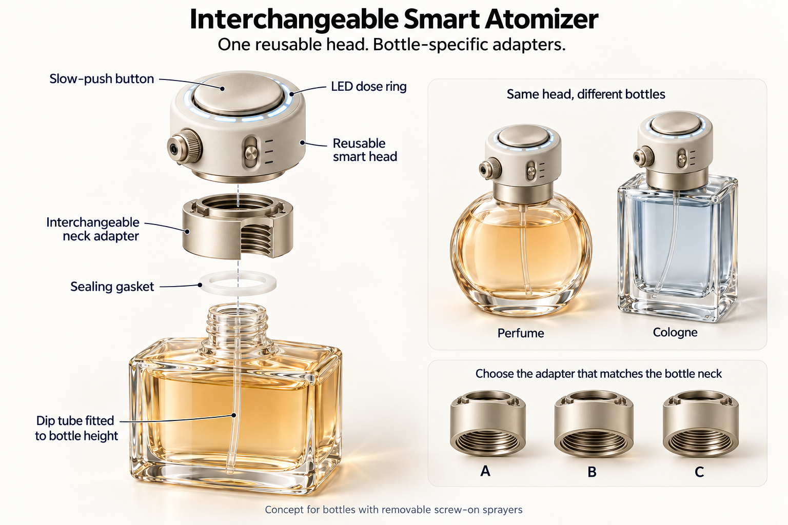

ONE HEAD. DIFFERENT BOTTLES.
A little pressure.
A deliberate response.
Explore how a reusable perfume head responds to touch, a changing press, and a bottle swap.
Dose is shown in simulation units, not milliliters. The controls stand in for physical sensors.
See the thinking behind it ↓Try a press
DetachedMouse or touch: press and hold. Keyboard: focus here and hold Space or Enter. Start depth is 20%.
THE QUESTION
Can a slow press tell us
what someone wants?
It can describe an input. It cannot tell us whether a person wants more fragrance or is simply hesitant. This model separates the gesture, the selected dose, and the rules for stopping.
Try releasing early, holding past completion, or removing the head. Watch the journal to see what the system knows and which rule wins.

Design inspiration · AI-generated concept, not a manufactured device.
How the code connects to the interaction
Variables remember
state, attached, setupValid, pressed, delivered, and targetDose describe the model right now.
Events report actions
pointerdown starts a press. pointerup releases it. A change event updates a selection. Keyboard events provide the same press interaction.
Conditions decide
if checks attachment, setup, input stability, time, and volume. Holding the button never overrides a completed dose or a fault.
Simulation scope: bottle compatibility is predefined; pressure and speed are inputs, not measured forces. Pump flow is an illustrative formula. Residual mist, real seals, cleaning, and hardware failure are not physically modeled. The 0.25-second stopping state is visual feedback with zero modeled flow.